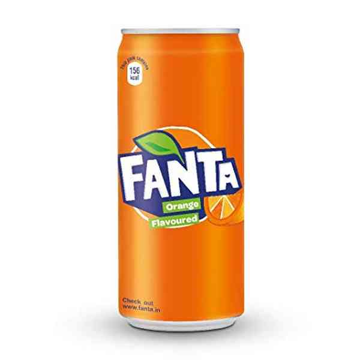

Fanta is an American-owned German brand of fruit-flavored carbonated soft drinks created by Coca-Cola Deutschland under the leadership of German businessman Max Keith. There are more than 200 flavors worldwide.
